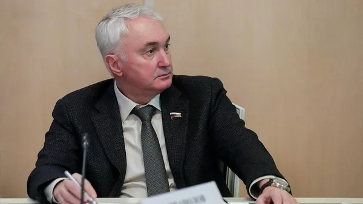
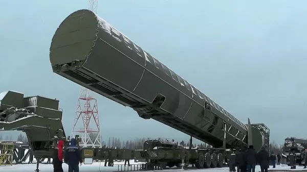
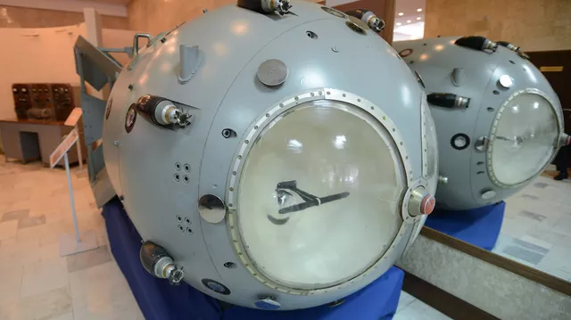
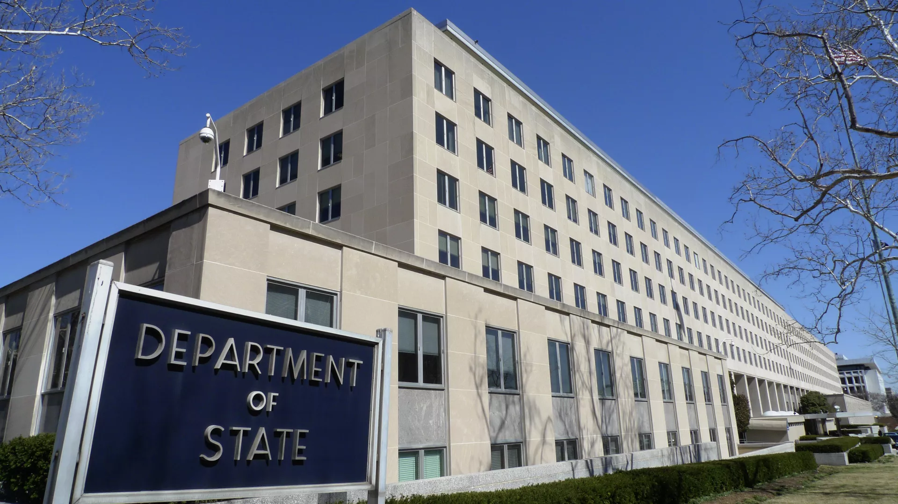

Картаполов назвал ключевую гарантию безопасности России
МОСКВА, 11 фев - РИА Новости. Оснащение ядерной триады России современным вооружением продолжается, это ключевая гарантия безопасности России и мировой стабильности, заявил РИА Новости глава комитета ГД по обороне Андрей Картаполов (ЕР).
"В настоящее время продолжается оснащение российской ядерной "триады" современным вооружением, при этом она остается ключевой гарантией не только безопасности России, но и глобальной мировой стабильности, являясь сдерживающим фактором в условиях, когда мир переживает период сложной трансформации", - сказал он.
По словам парламентария, Россия продолжает укреплять обороноспособность: на боевое дежурство заступил ракетный полк, оснащенный ракетным комплексом "Авангард", успешные пуски комплекса "Сармат" позволили приступить к работам по его развертыванию.

"Могут все решить за пару минут". У какой страны больше всего ядерных ракет
МОСКВА, 11 фев — РИА Новости. В конце января часы Судного дня передвинули на десять секунд вперед. Теперь они показывают 90 секунд до "ядерной полуночи". Все из-за усиления разговоров о применении атомного оружия. Какие страны "держат порох сухим" на фоне растущей эскалации — в материале РИА Новости.
Сейчас в ядерный клуб входят девять государств, которые принято делить на старые и новые. К первым относят пять постоянных членов Совета Безопасности ООН и победителей во Второй мировой войне — США, Россию, Великобританию, Францию и Китай.
Эти страны успели обзавестись оружием возмездия до принятия ключевого документа — Договора о нераспространении ядерного оружия, который вступил в силу в 1970-м. Со временем к нему присоединились 190 независимых государств, которые соблюдают его до сих пор.
Отказались это сделать только пять стран: Индия, Израиль, Пакистан, КНДР (Северная Корея сперва поддержала договор, но затем вышла из него) и Южный Судан. Все они, за исключением молодого африканского государства, тоже обзавелись немирным атомом.
При этом Тель-Авив никогда официально не признавал его наличие.

История создания первой советской атомной бомбы
Атомная бомба – первоначальное название авиационной ядерной бомбы, действие которой основано на взрывной цепной ядерной реакции деления. С появлением так называемой водородной бомбы, основанной на термоядерной реакции синтеза, утвердился общий для них термин – ядерная бомба.
Работы по созданию собственного ядерного оружия шли в СССР с первой половины 1940-х годов. Осенью 1941 года советская резидентура в Лондоне передавала в Москву сообщения о ходе работ в Англии по разработке атомного оружия. Советский физик Георгий Флеров с фронта направил ряд писем о необходимости продолжения работ по урану, прерванных войной, отмечая прекращение упоминания урановой тематики в западной научной печати.
28 сентября 1942 года было подписано постановление Государственного комитета обороны (ГКО) "Об организации работ по урану". В нем Академии наук СССР предписывалось возобновить прерванные войной работы по исследованию и использованию атомной энергии, а также подготовить доклад о возможности создания урановой бомбы или уранового топлива.
11 февраля 1943 года ГКО выпустил постановление об организации работ по использованию урана в военных целях, в соответствии с которым научное руководство работами по урану возлагалось на профессора Игоря Курчатова. 10 марта 1943 года было подписано распоряжение Академии наук (АН) СССР, о назначении Курчатова начальником Лаборатории № 2 (ныне Национальный исследовательский центр "Курчатовский институт"), которая была создана на основании распоряжения АН СССР от 12 апреля 1943 года.
КБ-11 поручили разработку первой советской атомной бомбы РДС-1 ("изделие 501", атомный заряд "1-200"). Расшифровывалось ее название по-разному: "Россия делает сама", " Реактивный двигатель Сталина" и т.д. Но для обеспечения режима секретности в официальном постановлении Совета Министров СССР от 21 июня 1946 года она именовалась как "Реактивный двигатель С". Одновременно разрабатывалось два варианта бомбы: С-1 с применением тяжелого топлива и С-2 – легкого. Для РДС-1 рабочим веществом должен был служить плутоний, для РДС-2 – уран-235. В плутониевой бомбе переход через критическое состояние должен был достигаться за счет симметричного сжатия плутония, имеющего форму шара, обычным взрывчатым веществом (имплозивный вариант). Во втором варианте переход обеспечивался соединением масс урана-235 с помощью взрывчатого вещества ("пушечный вариант"). В 1948 году работы по РДС-2 были свернуты.

В Госдепе США обеспокоились ядерными возможностями Китая
МОСКВА, 10 февраля/ Радио Sputnik. Укрепление Китаем своих военных и ядерных возможностей вызывает беспокойство, сообщила замгоссекретаря США по контролю над вооружениями Бонни Дженкинс.
"Китай укрепляет военные и ядерные возможности, и это беспокоит. Мы не видим открытости относительно этого процесса", – цитирует ее РИА Новости.
В то же время Дженкинс сообщила, что США готовы к диалогу с Россией по вопросу Договора по сокращению стратегических наступательных вооружений (ДСНВ).
"Реализация договора об СНВ крайне важна для национальной безопасности США. Мы надеемся, что нам с Россией удастся отделить обсуждение данной темы от украинского конфликта", – сказала она.